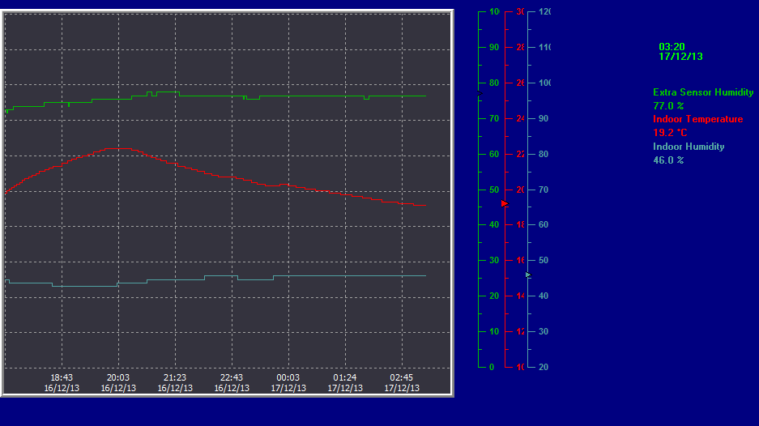
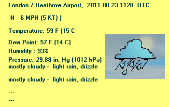
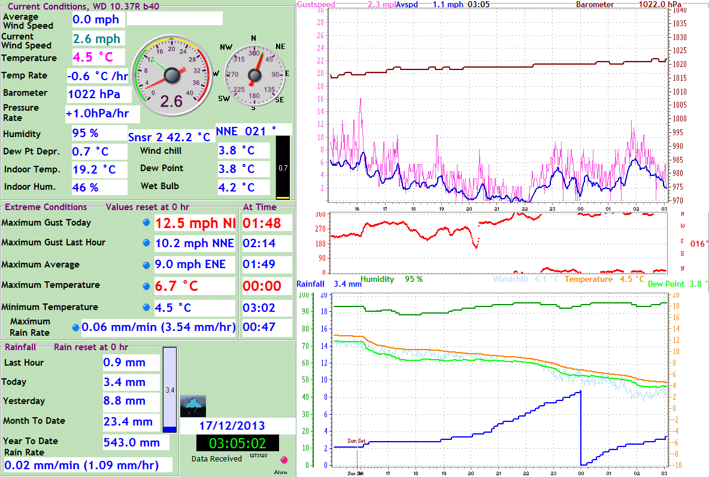

Detailed System and Site Information
System & Site | |
| Measure | Value |
| WD Version & Build # | 10.37R - 40 |
| WD Start Time | 08:14 01/11/12 |
| WD Data Count | 1100357 |
| WD Memory Use | 91,368 KB |
| --- | --- |
| Windows Uptime | 36 Days 17 Hours 7 Minutes 34 Seconds |
| Free System Memory | 1623 MB (Max: 4GB) |
| --- | --- |
| Station Altitude | 57 m |
| Station Latitude | 0051:33:21 N |
| Station Longitude | 0000:09:20 W |
System Location Conditions (Indoors) | |
| Measure | Value |
| Temperature | 16.1 °C |
| Temperature Trend | -0.9 °C /hr |
| Relative Humidity | 44% |
| Dew Point | 3.8 °C |
| --- | --- |
| Tmin Today | 16.1 °C at 01:17 |
| Tmax Today | 17.4 °C at 00:00 |
| Hmin Today | 42% at 00:00 |
| Hmax Today | 44% at 01:05 |
| Tmin Yesterday | 13.3 °C at 17:38 |
| Tmax Yesterday | 19.0 °C at 22:39 |
Site administrator: Ben Lee-Rodgers
Last 10hrs Temp/Hum for Secondary Sensor and Indoors

Live Secondary Temp: 13.0°C --- Min: 13.0; Max: 15.7
Live Secondary Humidity: 78%
Other
METAR
mostly cloudy

WD Screenshot

Home pages from old site versions:
Version 0 - Version 1 - Version 1.1
Test Area
Europe humidities |
| Source: Wunderground |
wugrab last accessed: 00:00, 08 Dec
Data.csv last modified: 01:28, 07 Dec
Latest history data source file modified: 00:11, 08 Dec(PHP test)
Latest timelapse available for download here